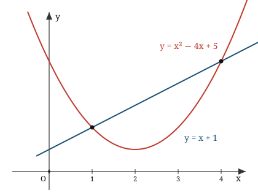
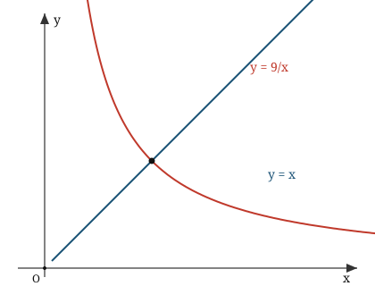

<script src="/assets/redirect.js"></script>
<section class="theory" data-section="IGCSE-18.4">
<h2>18.4 Simultaneous linear and non-linear equations</h2>
<p class="src">Based on Cambridge IGCSE Mathematics Core and Extended Coursebook, 3rd edition (Karen Morrison and Nick Hamshaw), Chapter 18 Curved graphs, printed pp.605–607 (graphical and algebraic methods for a line meeting a curve, Worked examples 11–13 style). Printed pages were read from rendered scans of part_059 (pp.605–607). Own wording and new numbers.</p>
<p class="key-words"><strong>Key words:</strong> <em>simultaneous equations</em>, <em>substitution</em>, <em>hyperbola</em>, <em>reciprocal graph</em></p>
<h3>A straight line and a curve</h3>
<p><strong>Simultaneous equations</strong> ask for the pairs \((x,y)\) that satisfy both equations at once. When one equation is a straight line and the other is a curve, those pairs are the coordinates of the points where the line and the curve meet.</p>
<p>Two standard methods are used.</p>
<ul>
<li><strong>Graphical.</strong> Draw both graphs on the same axes and read the coordinates of the meeting points. Readings from a scale are usually given to 1 decimal place.</li>
<li><strong>Algebraic.</strong> Use <strong>substitution</strong>: replace \(y\) in the curve equation by the expression for \(y\) from the line, then solve the quadratic (or other) equation that results, and find each matching \(y\).</li>
</ul>
<p>The algebraic method gives exact values when the roots are exact. The graphical method is still useful as a check, and it is the only option when a question asks you to use a graph that has already been drawn.</p>
<div class="worked-example">
<h4>Worked example 1: A line meeting a parabola</h4>
<p class="src">Book: Worked examples 11–12 style, printed pp.605–606. New graphs \(y=x^2-4x+5\) and \(y=x+1\).</p>
<p>The diagram shows the graphs of \(y=x^2-4x+5\) and \(y=x+1\). Write down the coordinates of the points where the line meets the curve. Then confirm the coordinates by substitution.</p>
<ol class="steps">
<li>From the graph the meeting points are \((1,2)\) and \((4,5)\) <span class="mark">B1</span> <span class="mark">B1</span></li>
<li>Algebraically, substitute \(y=x+1\) into \(y=x^2-4x+5\): \(x+1=x^2-4x+5\) <span class="mark">M1</span></li>
<li>Rearrange: \(0=x^2-5x+4=(x-1)(x-4)\), so \(x=1\) or \(x=4\) <span class="mark">M1</span> <span class="mark">A1</span></li>
<li>When \(x=1\), \(y=2\); when \(x=4\), \(y=5\) <span class="mark">A1</span></li>
</ol>
<p class="final"><strong>Answer:</strong> \((1,2)\) and \((4,5)\)</p>
<figure><figcaption>The parabola \(y=x^2-4x+5\) and the line \(y=x+1\) meet at \((1,2)\) and \((4,5)\).</figcaption></figure>
</div>
<div class="worked-example">
<h4>Worked example 2: Substitution with a different pair</h4>
<p class="src">Book: Worked example 13 style (algebra only), printed p.607. New equations.</p>
<p>Solve the simultaneous equations \(y=x^2-7x+6\) and \(y=2x-2\).</p>
<ol class="steps">
<li>Substitute: \(2x-2=x^2-7x+6\) <span class="mark">M1</span></li>
<li>\(0=x^2-9x+8=(x-1)(x-8)\), so \(x=1\) or \(x=8\) <span class="mark">M1</span> <span class="mark">A1</span></li>
<li>When \(x=1\), \(y=0\); when \(x=8\), \(y=14\) <span class="mark">A1</span> <span class="mark">A1</span></li>
</ol>
<p class="final"><strong>Answer:</strong> \((1,0)\) and \((8,14)\)</p>
</div>
<div class="worked-example">
<h4>Worked example 3: A line meeting a hyperbola</h4>
<p class="src">Book: Exercise 18.6 style (a reciprocal graph meeting a line), printed pp.606–607. New graphs \(y=9/x\) and \(y=x\).</p>
<p>The diagram shows the <strong>reciprocal graph</strong> \(y=\dfrac{9}{x}\) (a <strong>hyperbola</strong>) and the line \(y=x\). Find the coordinates of the meeting points in the first quadrant by substitution, and confirm them on the graph.</p>
<ol class="steps">
<li>Substitute \(y=x\) into \(y=9/x\): \(x=9/x\), so \(x^2=9\) and \(x=3\) or \(x=-3\) <span class="mark">M1</span></li>
<li>The first-quadrant point is \((3,3)\). The other meeting point is \((-3,-3)\) <span class="mark">A1</span> <span class="mark">A1</span></li>
</ol>
<p class="final"><strong>Answer:</strong> \((3,3)\) (and also \((-3,-3)\))</p>
<figure><figcaption>The hyperbola \(y=9/x\) and the line \(y=x\). The first-quadrant meeting point is \((3,3)\).</figcaption></figure>
</div>
<h3>Common mistakes</h3>
<ul>
<li>Reading only the \(x\)-coordinates from the graph and forgetting to give the matching \(y\)-coordinates.</li>
<li>After substitution, solving for \(x\) but not finding each corresponding \(y\).</li>
<li>Equating a curve to a constant (as in 18.3) when the second graph is a sloping line, so the rearrangement is not a horizontal line \(y=k\).</li>
</ul>
<h3>Quick checks</h3>
<div class="quick-check">
<h4>Quick check 1</h4>
<p>The graphs of \(y=x^2-4x+5\) and \(y=x+1\) meet at two points. Write down the larger of the two \(x\)-coordinates of those points.</p>
<details><summary>Worked solution</summary>
<ol class="steps">
<li>Substitute: \(x+1=x^2-4x+5\), so \(0=x^2-5x+4=(x-1)(x-4)\) <span class="mark">M1</span></li>
<li>The \(x\)-coordinates are \(1\) and \(4\). The larger is \(4\) <span class="mark">A1</span></li>
</ol>
<p class="final"><strong>Answer:</strong> \(4\)</p>
</details>
</div>
<div class="quick-check">
<h4>Quick check 2</h4>
<p>The graphs of \(y=\dfrac{9}{x}\) and \(y=x\) meet at two points. Write down the positive \(x\)-coordinate of a meeting point.</p>
<details><summary>Worked solution</summary>
<ol class="steps">
<li>\(x=9/x\) gives \(x^2=9\), so the positive \(x\)-coordinate is \(3\) <span class="mark">A1</span></li>
</ol>
<p class="final"><strong>Answer:</strong> \(3\)</p>
</details>
</div>
<div class="quick-check">
<h4>Quick check 3</h4>
<p>The graphs of \(y=x^2-4x+5\) and \(y=x+1\) meet at two points. Find the product of the two \(x\)-coordinates of those points.</p>
<details><summary>Worked solution</summary>
<ol class="steps">
<li>From Quick check 1 the \(x\)-coordinates are \(1\) and \(4\), and \(1\times 4=4\) <span class="mark">A1</span></li>
</ol>
<p class="final"><strong>Answer:</strong> \(4\)</p>
</details>
</div>
<p class="marks-key"><strong>Marks:</strong> M = method, A = accurate answer (depends on M), B = independent mark. Graph readings are approximate; leave exact values exact when substitution is algebraic.</p>
</section>
